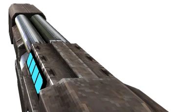
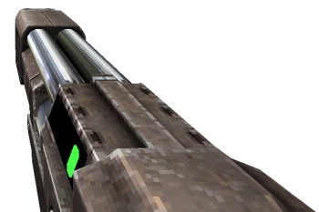

In ultrakill we have 3 shotguns
The Core Eject Shotgun is the blue variant of the Shotgun, and can be acquired by defeating Swordsmachine's first phase for the first time in [ 0-3: DOUBLE DOWN ], though it can be obtained early via a secret encounter with Swordsmachine in [ 0-2: THE MEATGRINDER ].
The Pump Charge Shotgun is the green variant of the Shotgun. It can be purchased at the shop for 12,500P after picking up the Core Eject Shotgun in [ 0-3: DOUBLE DOWN ] or the secret encounter in [ 0-2: THE MEATGRINDER ].
